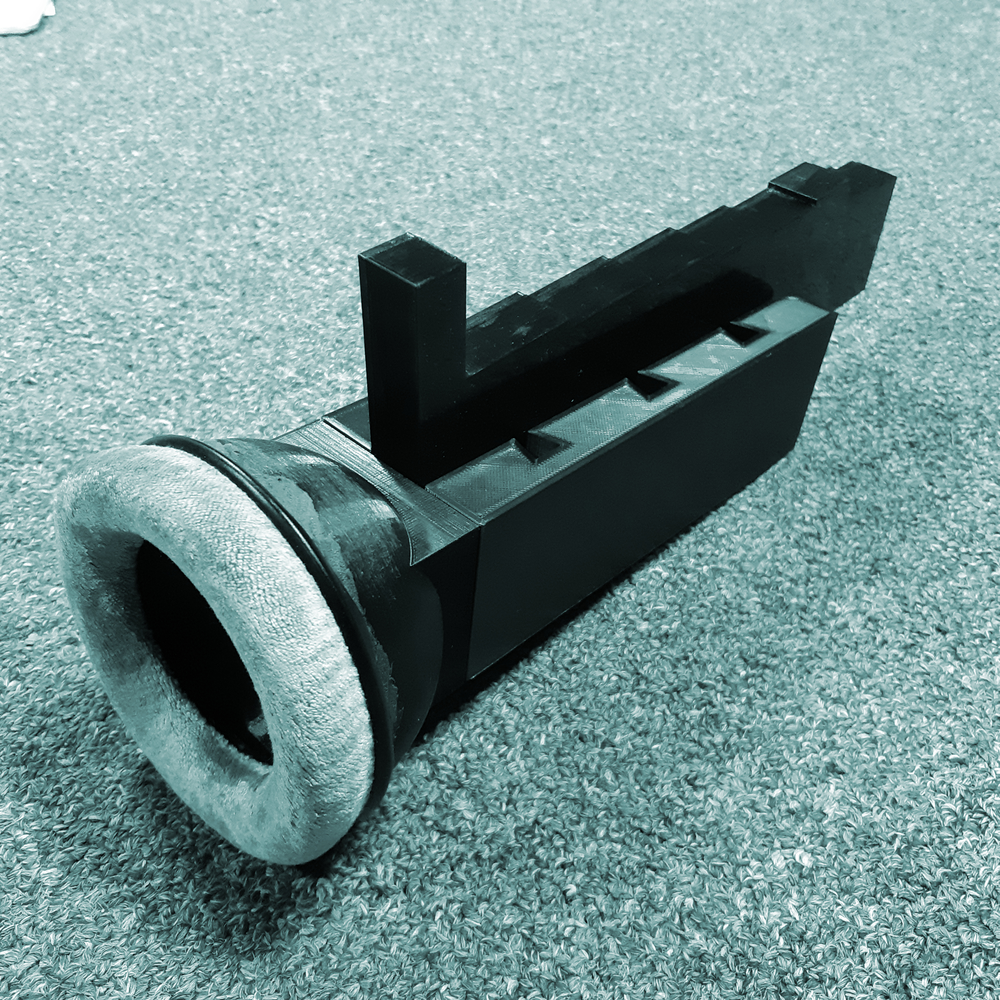
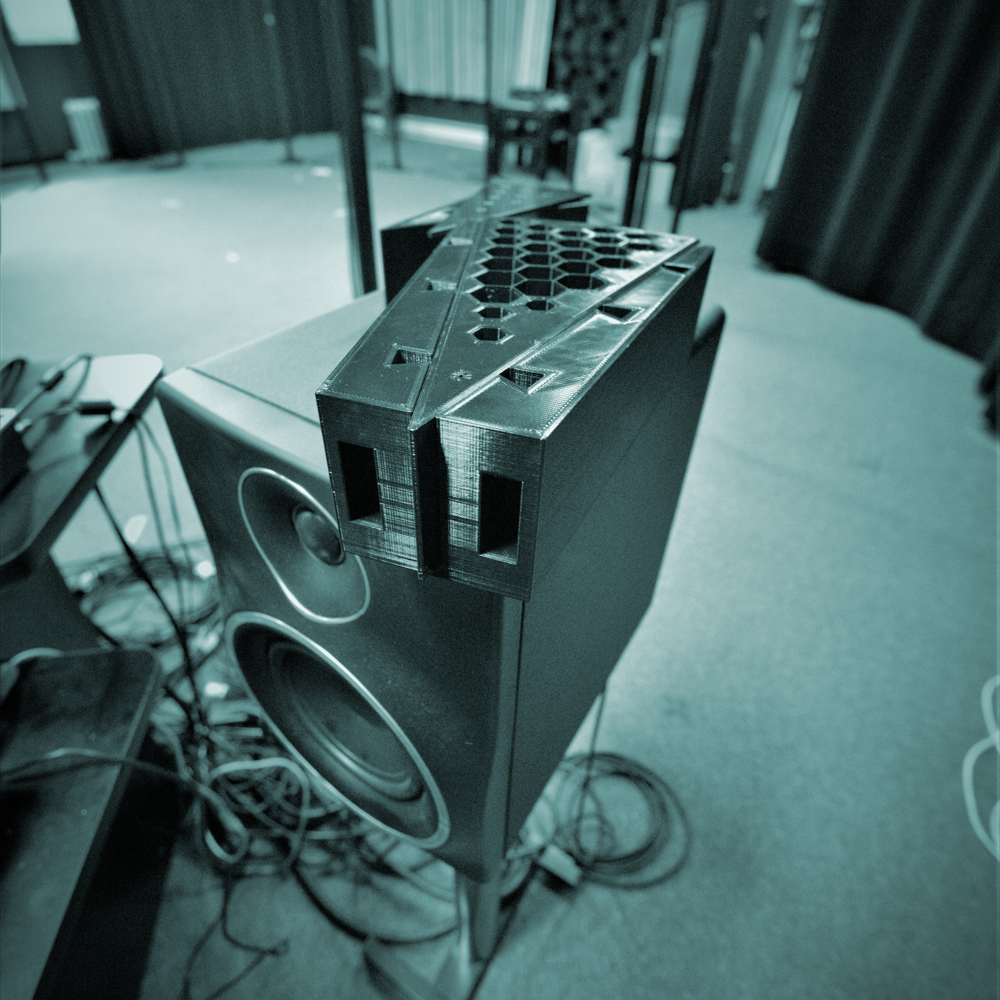
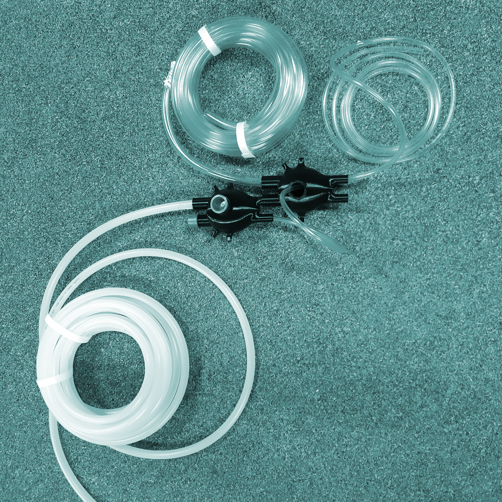

AUX, de auxiliaire - Provenant du latin auxiliarius (venant à l’aide), auxiliarius est issu de auxilium (aide) avec -arius comme suffixe (suffixe nominal). AURAL - Relatif à l'oreille. Auralité, par oposition à l'oralité qui est d'usage plus courant, place l'accent sur l'oreille, sa matérialité, plutôt que sur la parole ou le langage dans le cas de l'oralité.
Le titre serait donc ===> Auxauralités <===.
le cristal de l'oreille
CRISTAUX ACOUSTIQUES, LE CRISTAL DE L'OREILLE - Ce serait le sous-titre, menant à "Auxauralités : le cristal de l'oreille".
Le titre fut trouvé par l'équipe rapprochée, Georges Roussel, Ana Dall'Ara Majek, et Philippe-Aubert Gauthier. Il résume l'essentiel : cette idée d'écouter à extérieur de soi, d'écoute augmentée (aidée), par les moyens matériels des cristaux acoustiques, ou des méta-matériaux acoustiques. // Where sound art is our exploratory and critical vessel. These specific physical objects are defined below.
The starting hypothesis/question for Auxauralités: Acoustic meta-materials can locally change sound pressure fields (frequency and spatial filtering, i.e. local amplitude and phase modifications), they can shape the sound environments if extended to a larger scale (architectural scale, walls, buildings, cities). They could modify our auditory culture. How we could engage in a critical yet creative project using such material and enhance the general awareness with respect to acoustic meta-materials as material computing technologies? i.e. computing without computer, without sillicon, without electricity.
MÉTA-
MATÉRIAUX / META-MATERIALS
MÉTA-MATÉRIAUX - On définit d'abord les méta-matériaux avant de les étendre au son et à l'acoustique. Pour définir les méta-matériaux, un retour aux bases du terme.
Matériau : un terme qui désigne une substance ou matière quelqu'elle soit. Des matériaux naturels, comme le bois, la pierre, l'or, la glace. Ou des matériaux créés par l'humain et ses outils, comme l'acier, le plastique. Deux sous-entendus pour les termes matériaux ou matériel, un matériau est plutôt de phase solide (on ne parlera que rarement d'un liquide ou d'un gaz comme matériau) et un matériau est typiquement utilisé par l'espèce humaine pour la construction ou la fabrication de quelque chose.
Perspective historique nécessaire pour saisir le néologisme imposé par le préfixe méta ===> Jusqu'à l'ère industrielle et moderne, comment les matériaux étaient découverts ou inventés? Dans le cas de la découverte des matériaux, on pourrait dire qu'auparavant l'on trouvait un matériel dans la nature puis on l'utilisait tel quel ou avec peu de modifications. Ensuite, via les outils des sciences plus modernes, on mesurait ses propriétés mécaniques (densité, élasticité, résistance, contrainte de rupture), électriques (résistance, propriété électromagnétiques, pyroélectricité, piézoélectricité, etc.), ou chimiques. Selon ses propriétés mesurées, on pouvait alors en identifier les applications les plus pertinentes (besoin de résistance, de conduction électrique, etc.). En ce qui concerne l'invention de matériaux par l'humain, du passé jusqu'à l'ère industrielle, on cherche plutôt à combiner des substances en nouveaux matériaux pour atteindre de meilleures propriétés (par égard à tel ou tel besoin). Par exemple, des matériaux plus résistants que le bois tel l'acier pour construire de plus grands édifices, etc. L'important ici est de distinguer matériau de méta-matériau. Ce 'méta' vient du fait que les propriétés physiques ne viennent pas du matériel lui-même (tel qu’un nouvel acier plus performant), mais bien de la structure et de l’organisation dont les éléments structurels primaires de ce matériau. Dans le cas d’un matériau classique, ses propriétés sont constatées après coup même si cette démarche peut se faire en ayant une idée du résultat, l'ordre des choses reste conceptuellement le même.
L'idée de méta-matériaux impose une inversion de cette dernière approche. Meta, in the sense of beyond, or transcending. En effet, pour les MM (méta-matériaux), on démarre avec l'application visée. Par exemple, créer une cape d'invisibilité acoustique. On postule que la chose pourrait exister pour débuter l'exercice mental. À partir des théories et mathématiques de la physique, on tente d'identifier et de définir les propriétés d'un matériau imaginaire (un méta-matériau donc) qui permettrait de remplir les requis de cette application. On trouve ainsi une série de propriétés matérielles qui : (1) peuvent varier dans l'espace, (2) ne font pas nécessairement sens sur le plan de la physique (par exemple, une densité négative, etc.), (3) qui semblent totalement irréalistes et (4) qui vont au-delà des propriétés originelles du matériaux utilisé pour la structure. On vient donc de créer un méta-matériau remplit sa fonction non pas en existant en tant que matériau, mais par le fruit de sa fonction imaginée et déduite par les lois de la physique qui donnent alors sa forme et sa structure. Sa structure reflète sa fonction par sa matérialité et non par son matériau.
Prenons le cas de la cape d'invisiblité acoustique mentionnée. Il faudrait imaginer un matériel recouvrant l'objet à cacher qui permettrait la déformation locale des ondes sonores incidentes sur l'objet pour qu'elles contournent l'objet à rendre "invisible" puis qu'elles se reconstruisent de l'autre côté de l'objet. Comme si l'objet était absent, c.-à-d. qu'il n'a pas modifié l'onde sonore incidente. La nature ne nous permet pas de trouver de tels matériaux. On ne le trouva pas non plus dans les matériaux industriels du siècle dernier. Mais, comme indiqué, à partir des équations de l'acoustique on peut imaginer une structure dont les propriétés variant dans l'espace permettraient une telle cape d'invisibilité acoustique, comme un matériel imaginaire issu de la combinaison d’une fonction improbable et de la physique. Par ailleurs, les MM sont maintenant du domaine du possible. Une fois qu'ils sont imaginés, il est possible de les construire avec la magie récente de la manufacture additive, c.-à-d. l'impression 3D. Par exemple, un matériel acoustique avec densité variable dans l'espace, avec indice de réfraction variable, etc. Ainsi, dans le monde réel et matériel, les méta-matériaux sont des objets fabriqués avec des centaines ou milliers de petites cellules misant sur un phénomène simple et sans lien explicite avec la fonction désirée qui, à une échelle plus macroscopique, produisent le phénomène désiré.
Simplement, donc, les méta-matériaux acoustiques sont tous des matériaux imaginés de cette façon qui peuvent influencer le son (infrasonore, audible, ultrasonore). Peu importe leurs effets et applications. Il en existe plusieurs types, dont les GRIN (GRadient-INdex), un exemple de cellule GRIN 2D étant montré plus bas pour laquelle l'onde traverserait de gauche à droite le matériel, par exemple. Une telle cellule permet de courber un front d'onde acoustique en changeant localement la vitesse de propagation du son. Sorte de mur qui agit comme lentille acoustique.
TYPES DE MÉTA-MATÉRIAUX ACOUSTIQUES - Un aperçu. Cristaux acoustiques : assemblage de cellules cellules tubulaires (mais pas exclusivement cylindriques) menant à un filtrage spatio-temporel du son. C'est l'accumulation des cellules qui produit le filtrage. Seules et isolées, les cellules ne pourraient faire cet effet. Les types de cellules sont variés : résonateurs de type Helmholtz, forme création une diffraction simple mais qui se répète par l'accumulation des cellules, etc. GRIN : matériel avec soft GRadient-INdex (GRIN) qui offre un gradient de propriété matérielle. Par exemple, en faisant varier l'espace de passage entre des cellules rapprochées, il est possible de changer localement la vitesse du son. En jouant avec un tel gradient de propriété, il devient possible de courber l'onde sonore incidente par exemple. Guide d'ondes et délais : mur fabriqué de briques avec un labyrinthe permettant le passage du son dans chaque brique. Une série de briques est fabriquée avec des longueurs de labyrinthe différentes. Ces longueurs imposent un délai différent au son qui traverse chaque brique. Par l'assemblage informé de ces briques en un mur, il est possible d'ajuster localement le retard du son et d'ainsi introduire des retards locaux. Cette approche permet de déformer les courbures des fronts d'onde, par exemple, un mur qui redirige le son qui le traverse plus à droite, ou une surface qui focalise le son qui le traverse en un point de l'autre côté du mur. REFRACTIVE-INDEX : on peut imaginer des structures avec un indice de réfraction presque nul ou même des surfaces à réflection négative. Ceci permet d'imaginer des diodes acoustiques qui ne laisseraient passer le son que dans une direction, à l'instant de la diode électrique. D’autres encore, utilisent des assemblages de membranes, permettant de fonctionner à des fréquences bien plus basses que leurs homologues rigides.
TYPES DE MÉTA-MATÉRIAUX ACOUSTIQUES - Une conclusion. Toutes ces approches, qui ne forment pas une liste exhaustive, peuvent se combiner et créer des hybrides tant au niveau des approches que des applications. Pour Auxauralités, nous avons d'abord placé notre attention sur les cristaux acoustiques, par assemblage de cylindres. Cette forme étant la base des résonateurs de Helmholtz, nous les avons combinés pour obtenir un double métamatériau. Voir ci-haut un des premiers prototypes de crystal qui fut imprimé pour Auxauralités.
GENERATIVE DESIGN
Designing complex and repeated structures is key for Auxauralités. Generative design and related tools were investigated and adapted. This is a topic of a current manuscript.
CAD - With the advent of CAD (Computer-Aided Design) and automated control of machining (CNC, Computer Numerical Control), design methods and corresponding forms started to evolve until today. From molding and substractive manufacturing to the currently influential and futuristic trend in additive manufacturing and digital fabrication, it is clear that 3D printing and additive manufacturing bring unforeseen perspectives.
PARAMETRIC DESIGN is the idea of creating 3D models based on few input parameters. Changing the input parameters then automatically changes the 3D objects or assemblies. It typically accelerates the design and engineering workflow as a change is automatically taken into account. It is now a common tool in design and architecture. For our project, parametric design is key. Indeed, acoustical effects of meta-materials strongly depends on size and dimension (of cells and assemblies) which are related with frequency and corresponding wavelength. Therefore, we needed to develop a workflow based on parametric design to tune our design according to acoustical and creative requirements. This was achieved using Python and Autodesk Fusion.
GENERATIVE DESIGN - The main and innovative concept behind generative design is to rely on program, algorithm, physics and its equations, or computer code to generate design. In this project, we needed tools adapted to generative design for creating, and latter on, testing and comparing, acoustic-meta-materials-based concepts of acoustical sound effect.
PROCEDURAL MODELING is very much related to generative design: the definitions somehow overlap. For the sake of simplicity, we here consider procedural modeling as a branch or tool of generative design. Procedural modeling is simply the idea of creating content or models (2D, 3D) based on set of rules, i.e. procedures. The idea of procedural modeling is exceptionally powerful for the design, and latter on, testing of acoustic meta-materials.
All these methods and theoretical background are relevant to acoustic meta-materials only because of the advent of digital fabrication which supports a come back of ornementation and diversified morphologies, including biomorphism.
SYMPOIESIS
SYMPOIESIS - Known as the idea of collectively-producing process or creation. There are two potential meanings for sympoiesis with Auxauralités: As a process and as a art-science collaboration thrust.
Le déroulement naturel et organique du projet Auxauralités est un bon exemple de cette approche. S'étalant de janvier 2020 à décembre 2020, le projet s'est d'abord caractérisé par des rencontres hebdomadaires entre le stagiaire, le post-doctorant, l'artiste et le professeur chercheur principal accompagnées de rencontres moins fréquentes avec toute l'équipe. À leurs débuts, ces rencontres tenaient essentiellement de la méthode scientifique : revue de littérature, maîtrise des concepts et phénomènes physiques, développement d'outils pour la simulation acoustique, réalisation de modèles 3D, simulations numériques, résultats graphiques, réponses en fréquence des prototypes. Nous avancions alors sur la base de la littérature existante et de nos intuitions. Avec le temps, cette modalité scientifique s'est transformée en approche de création par l'expérimentation et par ce que nous appelons maintenant "Ears-On": à savoir de porter oreille à l'objet et aux prototypes des méta-matériaux qui sont développés. Les frontières se sont bel et bien estompées. Ainsi, tous et toutes apportent à la table son expertise, ses connaissances spécialisées, mais la mise en oeuvre et en action de ces expertises et connaissances adhère aux notions fluides et poreuses de la sympoïétique.
1 / 4

A slice of Helmholtz-resonator assembly for real-time listening at Sporobole.
2 / 4

A slice of disk-like Helmholtz-resonator assembly for testing at Sporobole.
3 / 4
Outdoor testing and sound capture of Helmholtz resonators at Sporobole
4 / 4

Original testing of resonators inspired from insects resonant cavities along with tubular connections at Sporobole.
ENVIRONNEMENTS SONORES
ENVIRONNEMENTS SONORES - Ensemble des sources sonores et de leurs réflections acoustiques sur des surfaces, formant un tout écologique (au sens de système). Ces sources peuvent être localisées ou distribuées dans l'espace de l'environnement. Les auditeurs qui appartiennent à un même environnement sonore forment une communauté acoustique : ils partagent une expérience esthétique sonore complète ou partielle de cet environnement, ce qui a une incidence sur leurs propres relations sociales, cultures sonores, et auralités.
En plus des sources sonores et de leurs qualités spatiales, spectrales et temporelles, l'architecture et tous les éléments réfléchissant le son – habillant ce son de réflections et de réverbérations même infimes ou à peine audibles – sculptent les environnements sonores. En fait, chaque environnement a une architecture aurale, par exemple: un aboiement de chien n'a pas la même signification sonore dans une clairière que dans un stationnement souterrain. Ainsi, matière et géométrie forment autant la couleur que la mise en espace des environnements sonores.
Des environnements architecturaux intérieurs ou extérieurs dotés d'une conception fondée sur l'usage de méta-matériaux acoustiques apporteraient des nouveaux environnements sonores, tant en ce qui concerne leur timbre, temporalité, que spatialité. Filtrage en fréquence, échos dirigés, calcul distribué.
ARTS SONORES
OEUVRE - Pour cette exploration des méta-matériaux acoustiques, nous avions choisi l'œuvre comme véhicule. Soit l'idée de ne pas simplement créer une œuvre, mais de donner vie à une œuvre -prototype. L'oeuvre est ici le véhicule d'exploration critique des sens et significations des méta-matériaux acoustiques dans notre environnement et leurs conséquences. La nature prototypique de l'oeuuvre ne signifie pas qu’il s’agit d’une réalisation non-aboutie, mais plutôt d’un hybride entre une œuvre et un prototype de laboratoire pour démontrer un principe, faire une mesure. Ainsi, tout comme le processus de collaboration tente d'être de nature sympoïétique, l'objet empruntera aussi à la sympoiesis.
À ce jour, la recherche et la recherche-création animent toujours Auxauralités qui se définit comme œuvre, comme pensée, comme prototype. Les moyens explorés pour la création de l'œuvre se penchent sur les résonateurs de Helmholtz organisés en réseau ou en cristal. Les thèmes concernent cette idée d'écoute augmentée, ou extérieure à l'homme, comment un tel cristal de l'oreille peut nous donner l'occasion d'une écoute matérielle, de l'aperçu d'une écoute animale, surhumaine ou surnaturelle. Entendre les environments sonores autrement.
Épilogue : From top to bottom, this text is a collage of our inspirations and ideas, textually and graphically. From us as a team, or from some of our individual writing. From top to bottom, it proceeds chronologically as a mirror of our exploration, from first ideas to latter design and prototypes. This research work continues until the end of 2020.
contact: gauthier.philippe-aubert at uqam.ca //
funding: FRQ Audace (Fonds Rercherche Québec) //
researchers: Philippe-Aubert Gauthier, Nicolas Bernier, Julien Sylvestre, Georges Roussel, Ana Dall-Ara-Majek, François Proulx, (c) 2020. All images and texts by the researchers. Last update: August 2020.